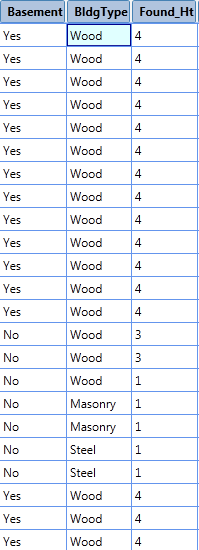
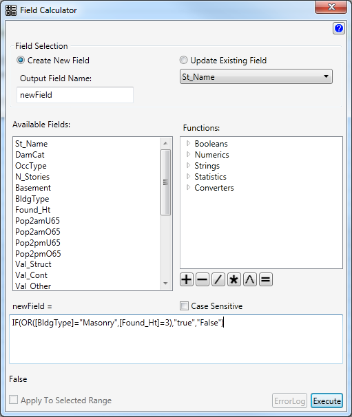

Returns TRUE if any argument is TRUE; returns FALSE if all arguments are FALSE.
One common use for the OR function is to expand the
usefulness of other functions that perform logical tests. For example, the IF function performs a logical test and then returns one value
if the test evaluates to TRUE and another value if the test evaluates to FALSE.
By using the OR function as the
logical_test argument of the IF function, you can
test many different conditions instead of just one.
Syntax
OR(logical1,logical2,...)
logical1,logical2,... are 1 to 255 conditions you want to test that can be either TRUE or FALSE.
There are no spaces before or after the commas.
Example
Formula
Description
Result
1
OR(TRUE)
One argument is TRUE
TRUE
2
OR(1+1=1,2+2=5)
All arguments evaluate to FALSE
FALSE
3
OR(TRUE,FALSE,TRUE)
At least one argument is TRUE
TRUE
Example 2
Create a new column that indicates if a row contains a BldgType of "Masonry" OR a Found_Ht of 3.


This will result in a new field being created called newField. This column will contain True if the BldgType is "Masonry" OR the Found_Ht is 3, and False if neither are true.